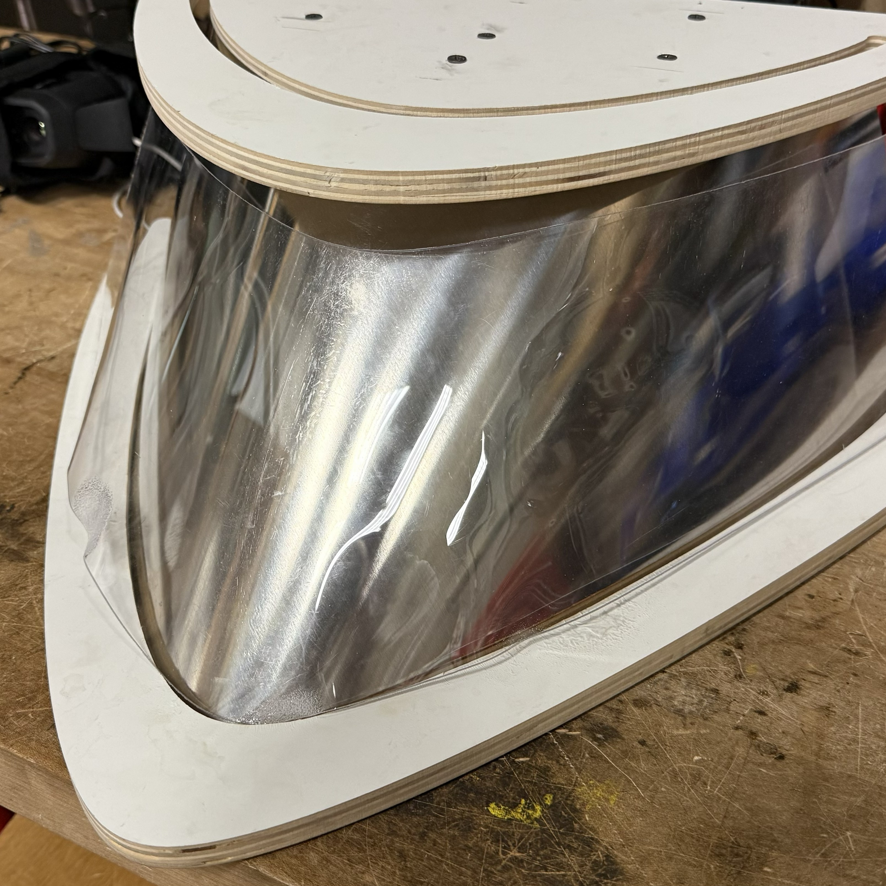
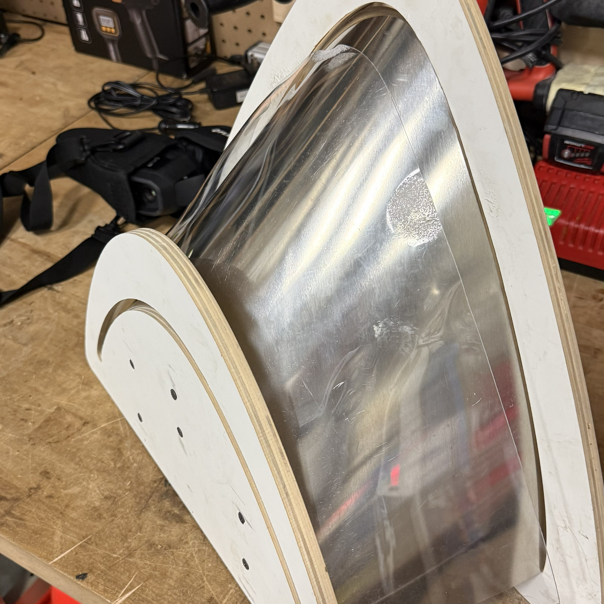
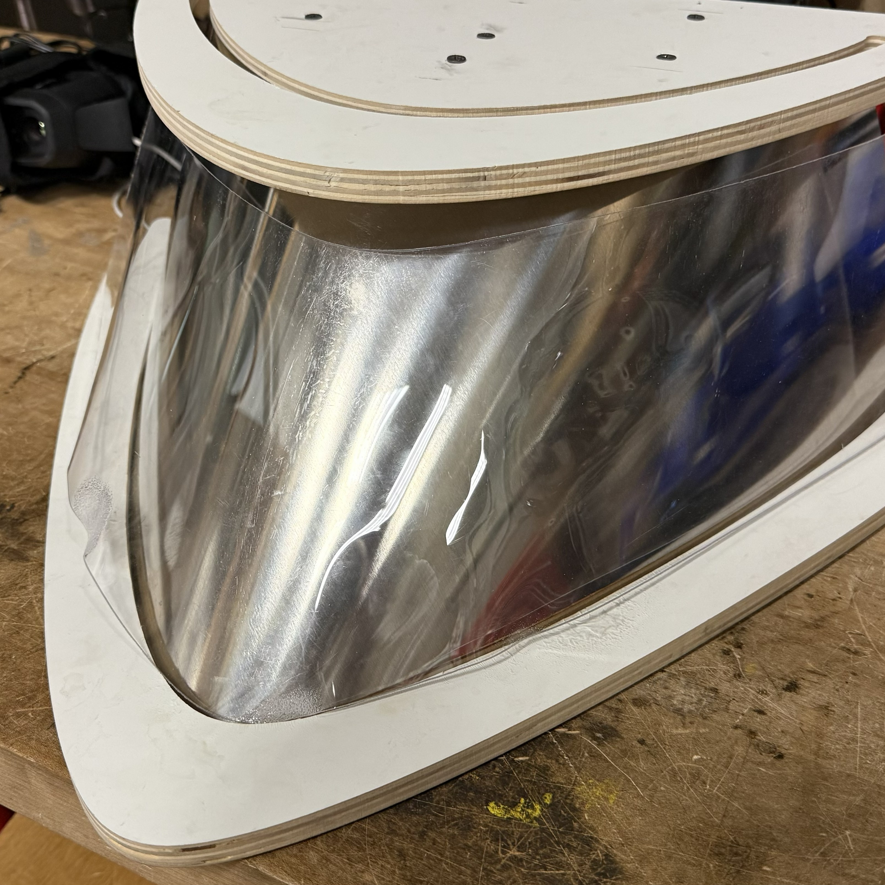
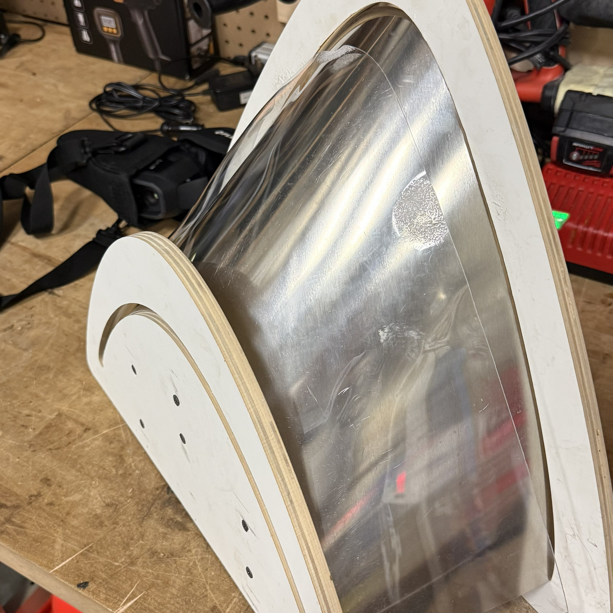

Thermoforming Test (Jig 1)
So, because thermoforming industrially seemed to be too expensive, I tried to do it in house. The photo on the right is a picture of my first test jig. It consists of two waterjetted pieces of wood, and a waterjet piece of aluminum and polycarbonate. I attached the two wooden pieces together with two by fours and wood screws. The aluminum is super flexible and was able to bend around a slot cut out in the wooden panels.
The way we were going to use this jig was to have the polycarbonate sheet stand vertically like in the photo to the right. Then we would go at it with a heat gun and let the polycarbonate fall onto the aluminum and form.
The glass transition temperature of polycarbonate is 140-150 degrees Celsius. We needed to be careful not to exceed 180 degrees Celsius as that is the temperature at which the polycarbonate will start to degrade and melt (which we did not avoid as shown later). There were definitely concerns about whether the heat gun would get hot enough and whether or not the polycarbonate would form as nicely as we had hoped. We were also quite concerned about heat distribution. The heat gun is a very concentrated heat source and we need all parts of the polycarbonte to heat up in order to have a good product.
 


